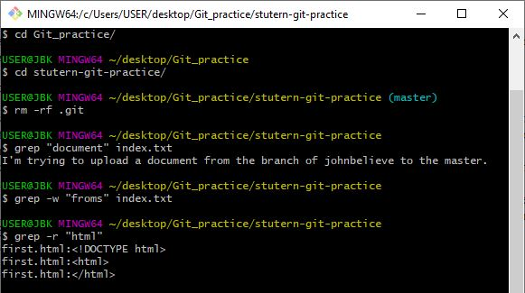
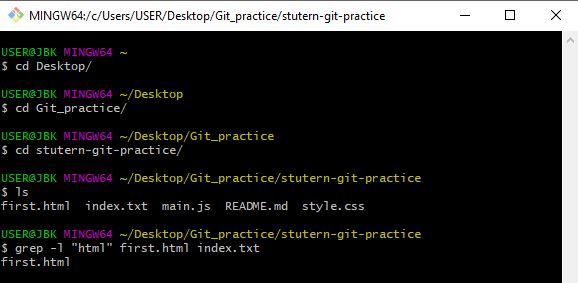

Git command line
Figuring out my favourite Git line is very hard because all of them really sounds interesting
Well my favourite is the grep command.
The grep command help in searching a file or mulitple files for a particular phrase.
After going through a thorough search, it prints out the result out line by line.
It uses a format of grep "keyword" Filename
There are a few arguments or flags that can be combined with the grep command for more efficiency:
- The -i flag: This flags search the keyword in question but it is case insentitive {Example: grep -i "soon" index.html}
- The -w flag: Find matches for the exact word "Soon" in a file words that contain "Soon," like "Sooner," won't count {Example: grep -w "soon" index.html}
- The grep: Find matches for "Marvel" in every file in the current folder { Example: grep "Marvel"}
- The -r flag: Find matches for "Marvel" in every file in the current folder AND every subfolder, all the way down { Example: grep -r "Marvel"}
- The -A flag: For each match of "Soon", print out that line AND the 4 lines after it (5 lines total) {Example: grep -A 4 "Soon" famousducks.txt}
- The -B flag: For each match of "Soon", print out that line AND the 4 lines before it (5 lines total) { Example: grep -B 4 "Soon" famousducks.txt}
- The -C flag: For each match of "Soon", print out that line AND the 4 lines before it AND the 4 lines after it (9 lines total) { Example: grep -C 4 "Soon" famousducks.txt}
- The -l flag: Instead of printing out the matching lines themselves, print out the filenames that match your search {Example grep -l "Daffy"}
- The -n flag: Show line numbers along with the matching lines: {Example: grep -n "Daffy" famousducks.txt}
Here are some images explaining how the grep command line is been used
